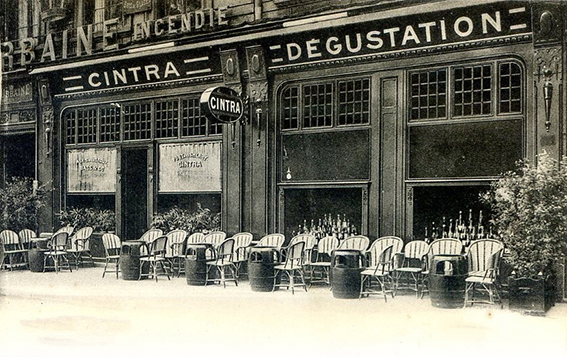
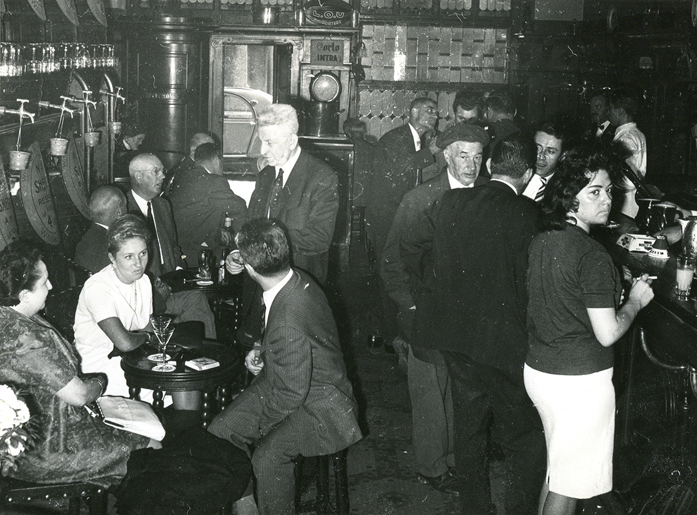
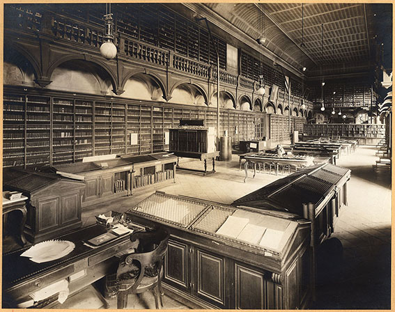

Table lyonnaise mythique et centenaire
Les Origines (1921)
On doit la création du Cintra en 1921 à des marchands portugais originaires de la ville de Sintra, à côté de Lisbonne. Ils ont établi un comptoir à Lyon pour faire connaître leurs produits locaux et particulièrement leur fameux porto.
D’ailleurs, le décor est resté intact : boiseries sculptées, vitraux et des fûts en chêne portant encore le noms des différentes caves des vins de Porto.
À l’emplacement de l’actuel parking des Cordeliers se tenait le plus grand marché couvert de Lyon. Jusqu’en 1971, le Cintra était ainsi l’endroit où se retrouvaient les commerçants de ce marché.
Juges, Politiques & Voyous
Dans les années 60, Le Cintra est un bar "version américaine", avec champagne et cocktails. C'est le "top" à Lyon. Banquiers, politiques et voyous s'y côtoient.
On y croise Louis Pradel (Maire de Lyon) et Francisque Collomb. Mais c’est aussi le repaire de la bourgeoisie lyonnaise qui s’y retrouve le dimanche pendant que les épouses sont à la messe.

L'Incorruptible Juge Renaud
Le juge Renaud, assassiné en 1975 par la pègre, y avait ses habitudes, aux côtés des voyous lyonnais qu'il traquait.
Le Gang des Lyonnais (1973)
La scène a lieu une fin d’après-midi d’avril 1973, au Cintra. Trois hommes ont rendez-vous à une table discrète : Edmond Vidal (dit Momon), Joanny Chavel et Jean Augé (le Parrain de Lyon).
Momon Vidal vient récupérer sa part du casse de Strasbourg. Le ton monte. C’est ici que le Gang des Lyonnais se déchire irrémédiablement et que la jeune génération prend le dessus sur l'ancienne garde.
Le "Fouquet's Lyonnais"
L'anecdote du tiroir : Charles Béraudier recevait chaque semaine les entrepreneurs du BTP au Cintra. Les liasses de billets glissaient dans le tiroir à double fond de sa table en échange de marchés publics.
Dans les années 90, le lieu devient le café le plus en vogue. De nombreux films y sont tournés : L’Armée des Ombres, Alice et le maire, ou encore L’Homme sans nom.
Un Quartier Historique
Palais de la Bourse
Inauguré en 1860 par Napoléon III, cœur battant de l'économie.
St-Bonaventure
Joyau de l'art gothique (1321-1380).
L'Assassinat de Sadi Carnot
À deux pas du Cintra, rue de la République, une dalle rouge marque le lieu où le Président fut assassiné en 1894.

Lycée Ampère
Situé à 100m, c'est l'un des plus vieux de France (1519). Charles Baudelaire y fut élève, tout comme Bernard Pivot ou Robert Badinter.
Gastronomie Lyonnaise
Cuisine française et lyonnaise généreuse. Le chef est attaché à la tradition.
“La politique, c’est comme l’andouillette, ça doit sentir un peu la merde, mais pas trop.”
L'Andouillette Bobosse : Une institution depuis 1961, tirée à la ficelle, servie en gratin.